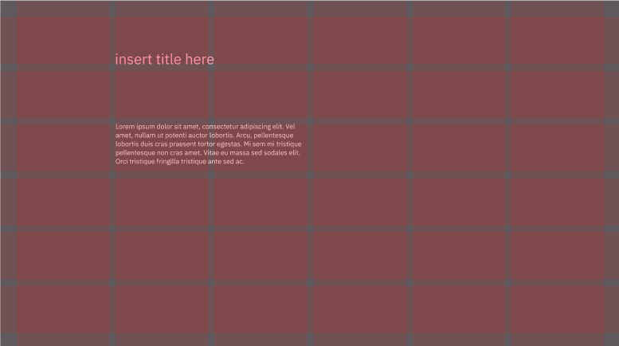

Team-Based Academic Project
Role:
Tools:
Slide & Landyard Design,& Copywriting
Figma & Adobe Creative Cloud
Date:
Fall 2021
This project was created for a university course on Information Design. Over a period of five weeks I worked with a team of four other students to create a microsite and three graphic assets for an organization called STRP, and their event, “The Future of Post-humanism.” These graphic assets consisted of an event poster, tickets, and lanyards for various guests. This project allowed my team and I to explore design principles such as layering, texture, and colour, among others. The main roles of each team member was as following: Soraya – the posters assets, and slide design, Erin – the lanyards assets, ticket assets, and copywriting, Alexis -the poster assets and ticket assets, and lastly Chinmayee – the tickets assets, poster asset and typography.
Over these five weeks, we created weekly slides to showcase our ideations and design process. One of my main roles was creating the design of these slides and producing persuasive copywriting to present our progress and final design assets. These slides were created within the design software Figma. I additionally assisted in the creation of the lanyard assets.
Figure 1: Slide Design Showing Grid and Initial Type Placement
I started the process by selecting and laying down an appropriate grid for the slides to base the positioning of text and assets. From here I would start to choose a typeface, size and colours for each heading, subheading and body text. It was important to me to ensure these slides would highlight our work appropriately. Figure 1 shows an initial mockup of a slide that I used to start planning out text positioning size and colours.
Figure 2: Slide Design for Showcasing the Event Lanyards Graphic Asset
Figure 3: Slide Design for Typography of Event Poster
Figure 2 and 3 show finalized slides to showcase the graphic assets of event lanyards and the event poster respectively. These graphic assets were created by the team, which I inserted within the slides to illustrate the process. During the creation of these slides, I selected colours that we had used within the graphic assets to convey a coherent visual approach. In figure 2 I created mockups of lanyards that I could insert our design within, to help illustrate how they would appear in a real life setting. In addition, the copywriting on each slide was equally important as the design. I specifically ensured that each paragraph on a slide was relevant and concise in order to convey my team’s message in an effective and efficient manner.
Figure 4: Slide Design to Showcase Event Tickets
Figure 4 shows another slide from our deck, this time illustrating our final iteration of the tickets we created for the event. A particular element I included was the addition of shadows behind the tickets to give it a more real to life appearance as a stack of tickets in our presentation. It was important for me to use details such as this while maintaining plenty of whitespace to create a minimalistic design to highlight the work without distracting the eye.
Throughout the course of the project, I was able to learn and cement fundamental design principles such as layering, texture, colour and typography. In addition, it was extremely beneficial to improving my teamwork and collaboration skills, as it was a team intensive project. One of the challenges I faced was centralized around conflicting opinions amongst the team during the process of ideation and design. In order to help ease these conflicts, I ensured that every team member was able to share their ideas to help us reach a compromise. I finished this project feeling much more confident in effectively working as a team and working with design principles, which has consistently benefited me for other courses and projects I took later on.